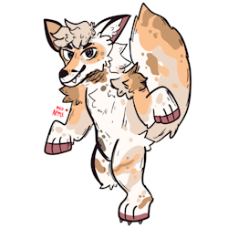

My Name is Flora, i live in germany. I won't tell you my age but lets just say i am a kid of the 2000s. I like videogames and my favorite game is Minecraft. I mostly play onn my PC but i also like to play on my xbox 360. I really like tech from the 2000s hehe. I am kind of stuck in that time and refuse to ever change a thing about that!. Thats pretty much all you need to know about me for now. If you wanna know more hit me up on Discord: fluffyflora
I have been around on Social media for some time now. The Name flora is only used since 2021 online tho. Before that my Name was "Mr.Noway". And that was the name i was mostly known for. I just needed a change and here we are. I still use Mr.Noway sometimes tho for some online games or Accounts.
I am intrested in Tech stuff like Old Consoles and older Computer hardware. I also like to sometimes write poems just for myself to save them and look at them.
My Plans for the future are to leave Germany and move to the UK. Since my english teacher, family and some friends said it would be a clever thing to do since my english isn't that bad, and it would give me more chances in jobs i wanted to work in.
